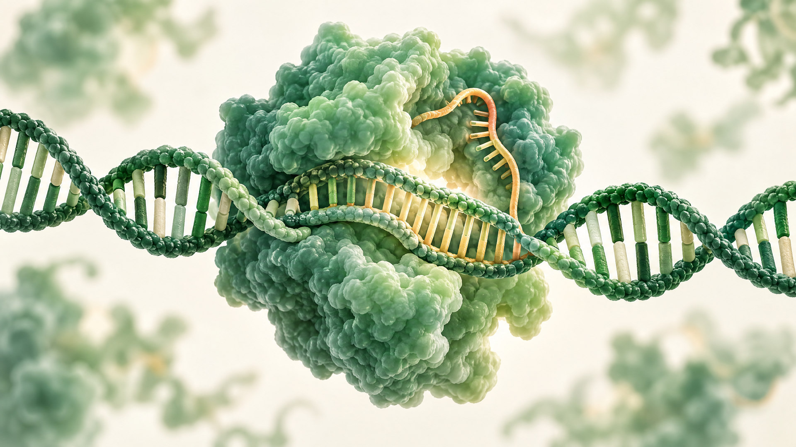

CRISPR Explained: How Scientists Can Edit DNA

Imagine if scientists could make a precise change to a tiny section of DNA—the molecule that contains the instructions used by living cells.
For decades, changing DNA with precision was extremely difficult. Then scientists developed powerful gene-editing technologies based on a natural defense system found in bacteria.
One of the most famous is CRISPR.
But what exactly is CRISPR, and how can it help scientists edit DNA?
What Is DNA?
Before understanding CRISPR, we need to understand DNA.
DNA is a molecule that carries genetic information. You can think of it as a biological instruction system. Sections of DNA called genes contain information that helps cells make proteins and perform their functions.
DNA is made from four chemical bases, commonly represented by the letters A, T, C, and G. The order of these bases contains genetic information.
Sometimes, a change in DNA can affect how a gene functions. Some genetic changes are harmless, while others can contribute to disease.
This is where gene editing becomes particularly interesting.
What Is CRISPR?
CRISPR is an acronym referring to a particular type of repeated DNA sequence found in bacteria. Scientists discovered that these sequences are part of a bacterial immune-defense system.
Bacteria can use CRISPR-associated proteins to recognize genetic material from viruses and help defend themselves against infection.
Researchers realized that this natural system could be adapted as a tool for studying and modifying DNA.
One of the best-known CRISPR systems uses a protein called Cas9.
How Does CRISPR-Cas9 Work?
At a simplified level, CRISPR-Cas9 works like a guided molecular cutting system.
Scientists design a short piece of RNA called a guide RNA that is complementary to a particular DNA sequence. The guide RNA helps direct the Cas9 protein toward the matching DNA region.
When Cas9 reaches the appropriate target, it can make a cut in the DNA.
But making the cut isn't the end of the process.
The cell then attempts to repair the damaged DNA. Scientists can take advantage of the cell's natural repair processes to produce a desired genetic change.
So, rather than thinking of CRISPR as a tiny pair of scissors that simply rewrites DNA, it's more accurate to think of it as a system that can target a particular DNA sequence and trigger a change that the cell then repairs.
Why Is DNA Editing Important?
The ability to precisely modify DNA has enormous potential for science and medicine.
Researchers can use gene editing to investigate what particular genes do. By changing a gene in laboratory cells or organisms, scientists can study how that change affects biological processes.
Gene-editing technologies are also being investigated or used in certain medical applications, including approaches aimed at treating specific genetic diseases.
However, this doesn't mean scientists can simply “fix” every genetic condition. Biology is extremely complicated, and many diseases involve multiple genes as well as environmental and other factors.
CRISPR and Medicine
One of the most exciting areas of research is using gene editing to address diseases caused by particular genetic changes.
For some conditions, scientists may attempt to modify cells so that they function differently or produce a useful biological product.
In recent years, gene-editing treatments have moved from laboratory research into clinical medicine for certain conditions. This represents a major milestone for biotechnology.
However, these treatments require extensive testing to determine whether they are effective and safe.
What Are the Risks?
A technology powerful enough to change DNA also raises important questions.
One concern is off-target editing. A gene-editing system may sometimes interact with DNA sequences that resemble the intended target. Scientists work to reduce and detect these unintended changes.
There are also questions about how gene editing should be used.
For example, editing certain cells in a person's body is different from making changes to embryos or reproductive cells. Changes made to reproductive cells could potentially be passed to future generations.
This is why gene editing isn't only a scientific issue—it is also an ethical and social issue.
Can CRISPR Create “Designer Babies”?
This is one of the questions people often ask when they hear about CRISPR.
The idea of deliberately selecting or modifying characteristics such as intelligence, appearance, or athletic ability is far more complicated than simply changing one DNA sequence.
Most human characteristics involve many genes and interactions with the environment. There are also major ethical concerns surrounding heritable genetic modification.
Therefore, the popular idea that CRISPR can simply be used to design a baby with selected characteristics is a major oversimplification of what the technology can actually do.
CRISPR Is More Than Just “Genetic Scissors”
The phrase “genetic scissors” is useful for introducing CRISPR, but modern gene-editing technology is becoming much more sophisticated.
Scientists have developed approaches that can modify DNA or gene activity without necessarily making the same type of DNA cut associated with classic CRISPR-Cas9.
Examples include base editing and prime editing, which are being studied as potentially more precise approaches for making certain types of genetic changes.
These technologies are still an active area of research, and scientists continue to investigate their capabilities and limitations.
The Future of Gene Editing
CRISPR has changed the way scientists think about genetic research.
It gives researchers a powerful way to investigate genes, understand diseases, develop biological tools, and explore potential treatments.
But CRISPR isn't magic. DNA is incredibly complex, and changing one part of a biological system can have consequences that scientists need to understand carefully.
The future of gene editing will therefore depend not only on improving the technology but also on careful research, safety testing, regulation, and ethical decision-making.
Conclusion
CRISPR is one of the most fascinating developments in modern biology.
At its core, the technology allows scientists to target particular DNA sequences and influence how genetic information is changed or used. What began as the study of a bacterial defense mechanism has become a major tool in genetics and biotechnology.
The most exciting part may be that we're still learning what gene editing can do.
As the technology develops, it could help scientists understand diseases that were once difficult to study and potentially provide new treatments for some genetic conditions.
But with the ability to modify the instructions of life comes an equally important responsibility: we need to understand not only how to edit DNA, but also when and why we should do it.
← Back to all articles